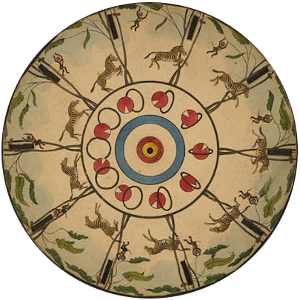
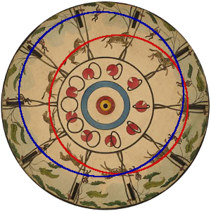

2021-12-16 23:41
A balancing monkey and a jumping zebra
The phenakistiscope is a rotating disk that produces short animations. It was invented in the 19th century, and the disks from that time are really beautiful. The animations they create are intriguing. In this series we look at a few of the ideas that result in these captivating works of art.
A disk with many elements
Up and down movement can remind us of the sun and the moon, of birds flying, of sea waves… or of monkeys and zebras! Take a look at this nice animation. Several things are going on:
Some hoops are turning in-place, close to the center of the disk
A red ball moves around the disk and goes through the turning hoops
A monkey swings from branch to branch, close to the border of the disk
A zebra jumps through two trees at the center of the disk
The first two elements of the animation are described in the first article of the series. The hoops are stationary because there are as many hoops as slits in the disk, and the number of slits determines the fixed angle between animation frames.
The red ball is moving through the hoops because there are less ball images than slits. So, the angle between the balls is larger than the angle that the disk rotates at every frame, and therefore, the balls do not arrive to their previous position. They move forward (or backwards!)
But the monkey and the zebras? Well, they also move forward. There are less images of the monkey and the zebra than slits in the disk. But that is not all: They move up and down! And this is very interesting.
Moving objects up and down
To draw the up and down movement you can do like before, with the radial lines: You draw the first image, you turn the disk, draw the next one a little higher, repeat, eventually you start drawing a little bit lower, you reach the bottom, and then you draw higher again.
Let’s see that with more detail. You start with the disk at 0° and put your first zebra. The disk turns 30° and the zebra goes up a little. The disk turns again, to 60°, and the zebra keeps going up. The zebra reaches the top at 90°. At 120°, it is now going down. When it reaches 180°, the zebra is at the same distance from the center as the initial drawing. It continues to go down until 270°, when it hits the bottom, and starts to go back up until the last image. This description looks like a sinusoidal curve! And have you guessed what is the shape actually drawn in the disk? It is a circle!
Conclusion
Fitting images in circles results in up and down movement when the disk rotates! Another conclusion? This is an interesting way of thinking about sinusoidal waves!
So far, we have discussed two movements: Tangential and radial. In the next article we will talk about objects that move “up and down”.
About this series
This is the third article about the phenakistiscope. In this short series, I describe some of the ideas used to animate the disks. The first article is here.
The image used above can be found in the library of congress of the United States and it is in the public domain.